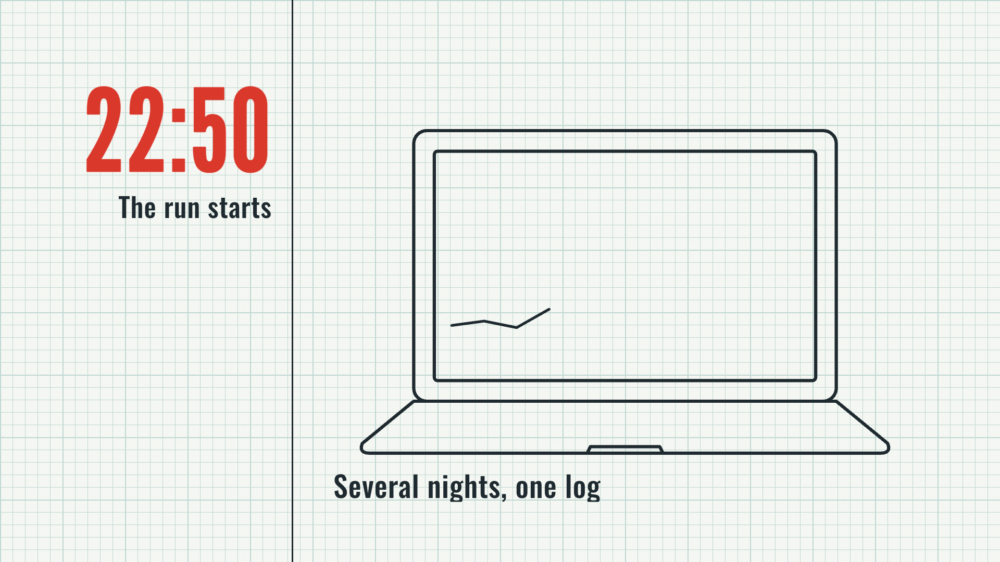
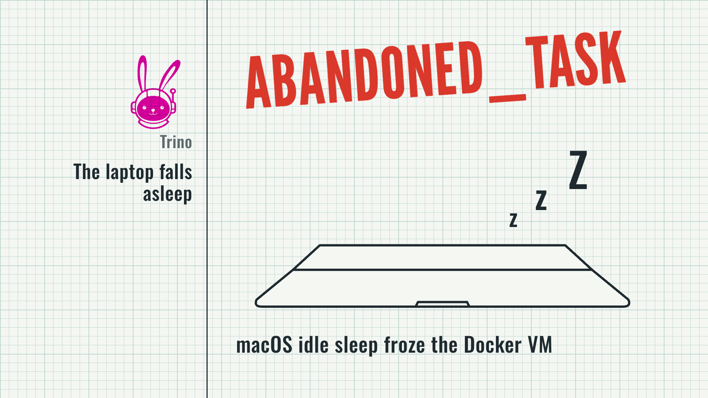
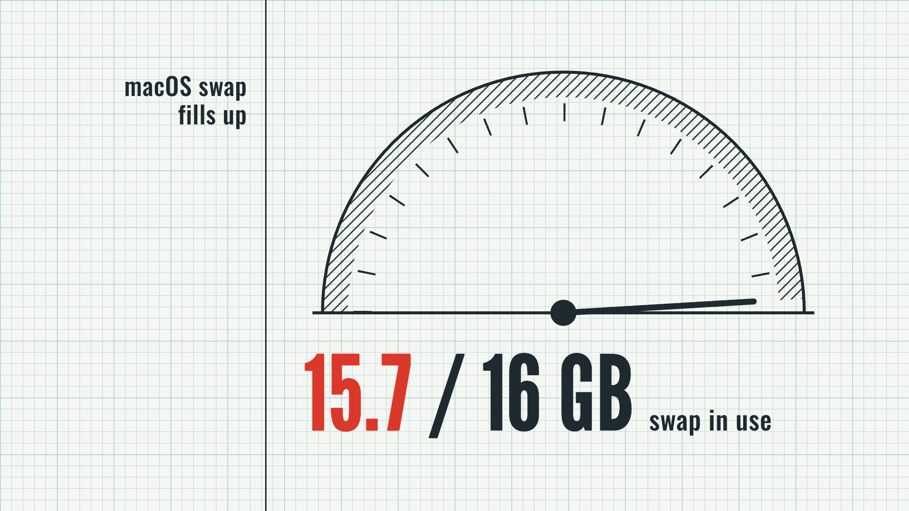
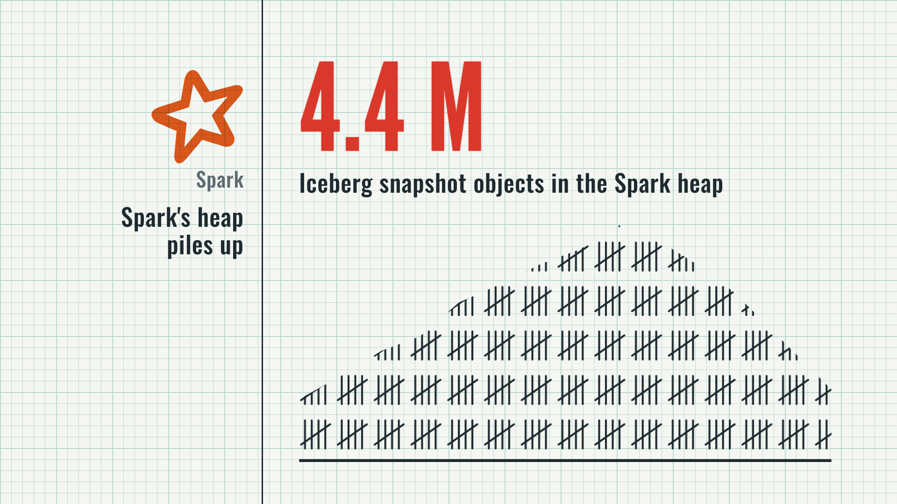
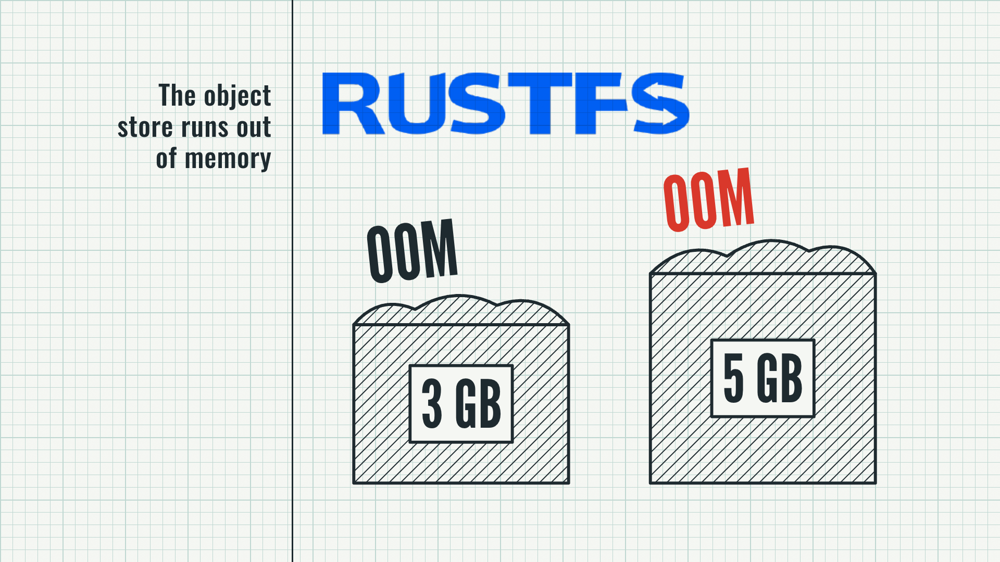
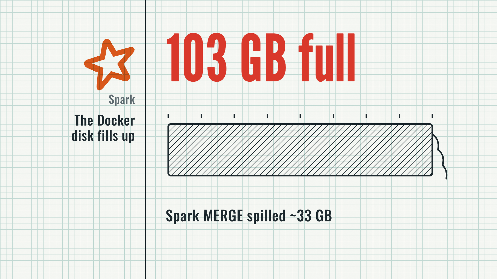
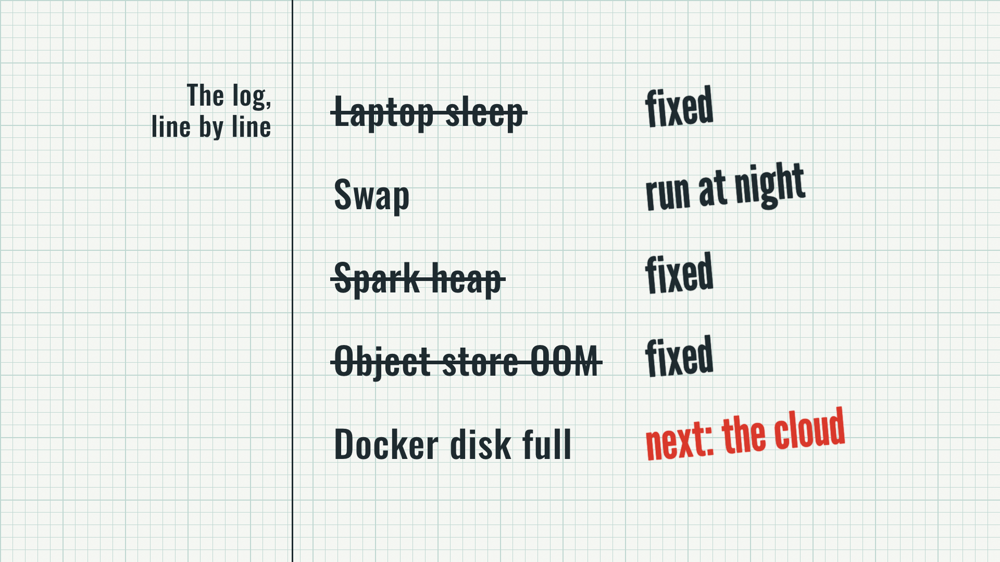
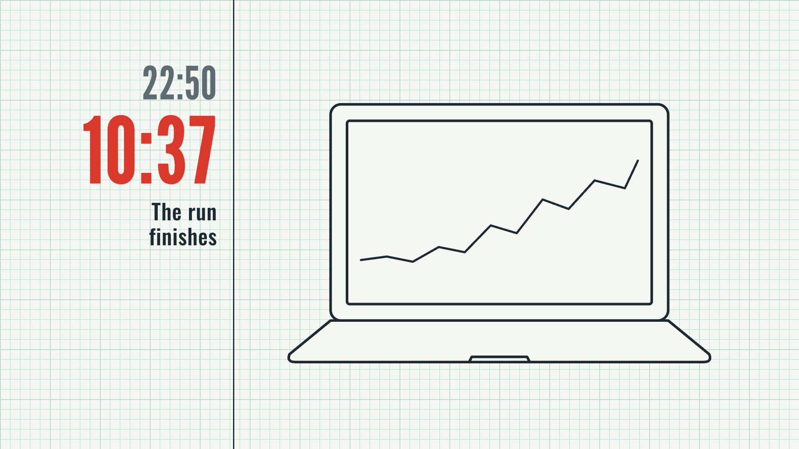
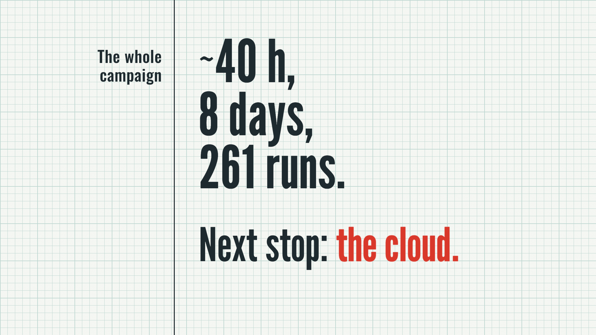
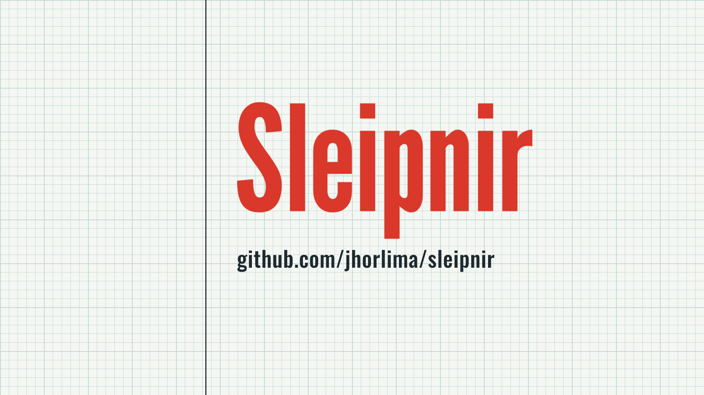

The night runs as one log book on the recorder paper, bounded by 22:50 and 10:37. 32.9 s (scenes overlap by 0.5 s on each sheet advance), 1920 x 1080, 30 fps, effects only. Every number comes from media/shared/data.json.

"22:50" is stamped in the margin; the pen draws the laptop and starts its trace; "Several nights, one log" says the incidents come from more than one night. Sound: pop on the stamp, click-soft as the pen touches down.

Hard cut on a glitch: the lid shuts, three z's rise, Trino's "ABANDONED_TASK" is stamped across the sheet. Sound: glitch-3, then error.

The swap dial sweeps to the stop: 15.7 of 16 GB. Sound: whoosh-short on the sheet turn, error at the stop.

Snapshot tally marks pile into a heap; "4.4 M" is stamped when it peaks. Sound: error on the stamp.

RustFS overflows its 3 GB box (OOM), gets 5 GB and overflows again; the second stamp is red. Sound: error on each stamp.

Spark's MERGE spills ~33 GB; the Docker disk bar fills to "103 GB full" and spills over its end. Sound: error on the spill.

Each row gets its verdict, one every 0.5 s: three are struck and stamped "fixed", swap gets "run at night", and the Docker disk stays open with the red "next: the cloud". Sound: pop on each stamp.

"10:37" is stamped under the grey 22:50; the trace on the screen reaches the top. Sound: pop on the stamp.

"~40 h, 8 days, 261 runs." stamped line by line, then "Next stop: the cloud." with the cloud in red. Sound: pop per line, impact-bass-1 on "the cloud."

"Sleipnir" stamped, the repo URL under it, held to the last frame.